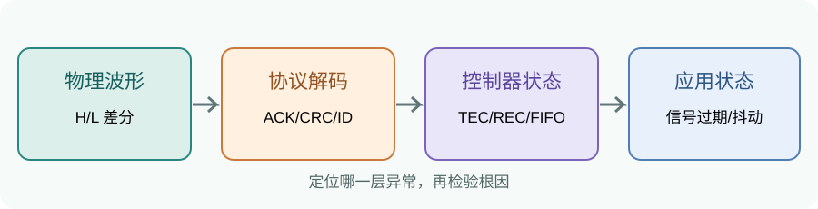

CAN ENGINEERING / CHAPTER 25
第25章 · 从波形到根因的 CAN 调试
抓到了报文却找不到故障？先把差分电气信号、帧错误、控制器状态和应用超时拆开观察。
25.1 把四种不同证据摆在同一时间轴
一次丢帧可能由线缆反射、ACK/CRC 错误、硬件 RX FIFO 溢出或应用层超时造成。它们表现相似，根因完全不同。

- 测波形：用适当探头和示波器观察 CAN_H/CAN_L 差分信号、振铃及共模；普通数字逻辑分析仪更适合连接符合其输入电平的收发器 RXD，不应直接把总线电压当 TTL。
- 解帧：记录帧格式、ID、DLC、时间戳、ACK、CRC、错误信息。
- 读控制器：读取 TEC/REC、bus-off、RX FIFO 溢出计数。
- 看业务：记录最后有效消息时间戳，区分未收帧与信号超时。
25.2 错误标志不等于“连续 6 个显性位就是一帧”
经典 CAN 的主动错误标志为 6 个显性位，可能与其他节点错误标志重叠；被动错误标志为 6 个隐性位。判断时要结合位填充、错误定界符与控制器状态，不能只数显性脉冲。参见 Kvaser 错误机制。
发送端没有看到 ACK 可能是没有其他正常模式节点、测试接口处于 listen-only、时序不一致或连接问题；不能直接断言“接收节点损坏”。TEC/REC 达到 128 进入错误被动相关状态；bus-off 针对发送错误计数 TEC 超过 255，不是任意计数大于 255。
| 现象 | 先查什么 | 不要急于推断 |
|---|---|---|
| ACK Error | 是否有第二个正常模式节点，速率/采样点及连接 | 对方 MCU 损坏 |
| CRC/Bit Error | 电气波形、时钟、线束、收发器 | 必定是应用解析错误 |
| 无总线错误但业务超时 | 过滤器、FIFO、队列和任务调度 | 总线绝无问题 |
25.3 总线负载按完整帧位数计算
实际总线占用包含 SOF、仲裁、控制、数据、CRC、ACK、EOF、帧间隔、位填充，以及可能的错误重发。理想无填充的经典 CAN 数据帧基线可估为标准帧 47 + 8×DLC 位、扩展帧 67 + 8×DLC 位（含 3 位帧间隔）。
fᵢ 是每秒帧数，Bᵢ 是每帧总线位数，R 是 bit/s。位填充和重发需另计；这不是 CAN FD 或实测精确模型。
动手试算：500 kbit/s，8 字节，1000 帧/秒
22.2%（111 bit/帧）
附加百分比是情景系数，并非精确填充上限；超过 100% 表示提供的流量不可持续。真实设计要核算峰值、优先级、截止期限及重发。
“80% 一定危险”“30% 一定安全”都不是协议保证。只给报文改优先级并不会减少物理总线占用，低优先级周期任务反而可能被延迟。
25.4 五步复现和验收
- 固定节点数、线束拓扑、供电、位速率、采样点及报文周期。
- 全部断电后，典型双端 120Ω 的高速 CAN 总线测约 60Ω；其他拓扑不适用此简化判断。
- 同步抓波形/帧/TEC/REC/FIFO 计数和应用时间戳。
- 一次只变更一个变量，例如仅调整线束或报文周期。
- 用最坏工况下的延迟、丢帧、错误状态与业务超时作为验收指标。
依据与延伸阅读
Kvaser · Error Handling · Kvaser · Why do I get error frames? · Kvaser · CAN Protocol Tutorial。计算器是教学估算，需以实测总线负载校验。